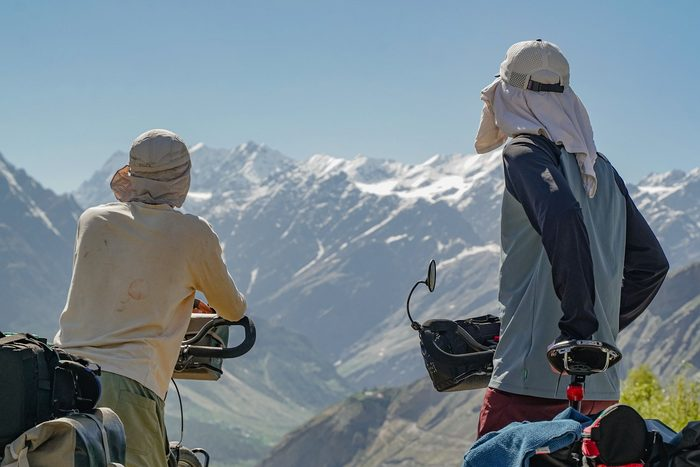
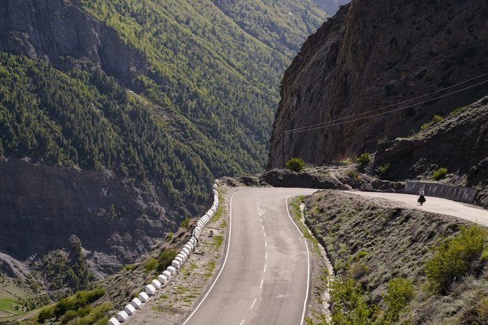
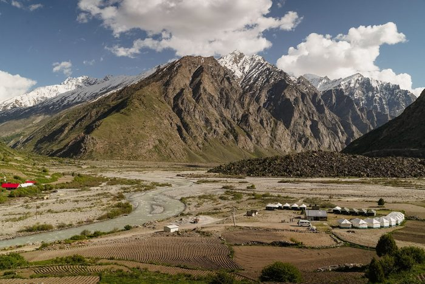
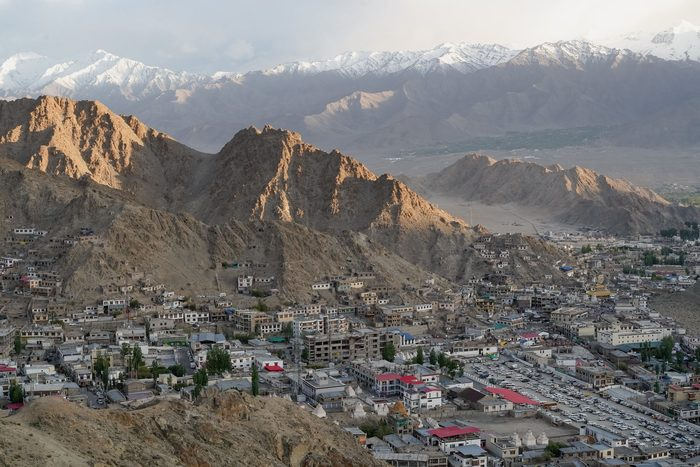
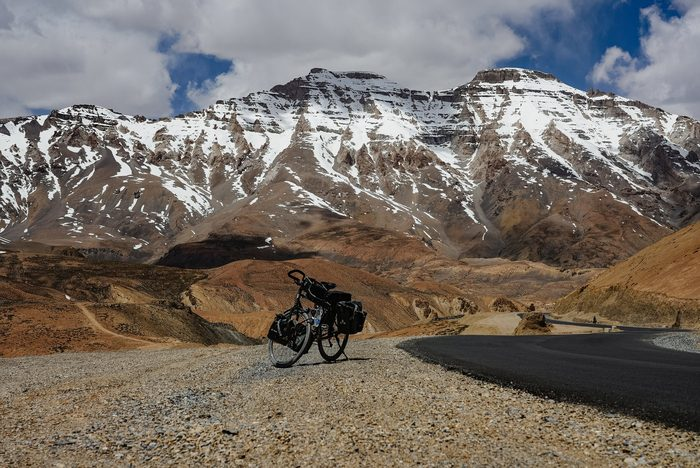
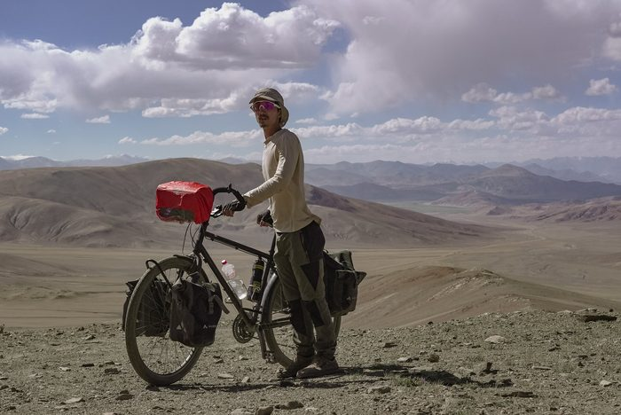
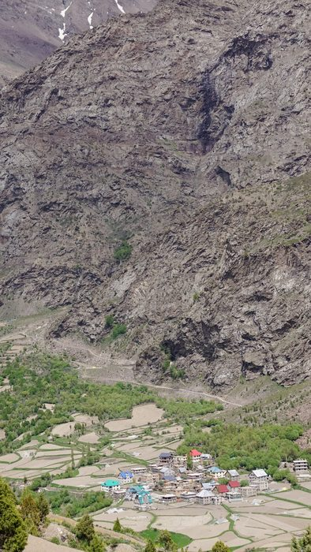
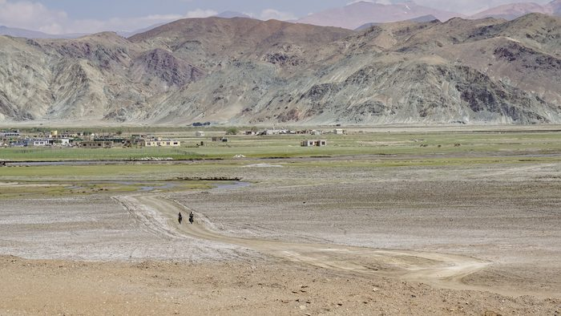

Dossier de presse, affiche, kit de communication et photographies de tournage en haute définition, réunis pour la presse, les salles et les festivals.
Synopsis, entretien croisé avec Marceau Lemoine, fiche technique et photographies de tournage.
Télécharger le dossier (PDF)Logos du film (fond clair et fond foncé), prêts à l'emploi pour une annonce ou un programme.
Télécharger le logoHuit photographies de tournage en haute définition, à télécharger une par une. Merci de mentionner le photographe indiqué sous chaque photo.







